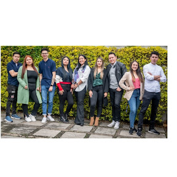

MARY LUZ DIMATE G
Técnica en Asistencia en Organización de Archivos, con una sólida trayectoria de 4 años en la producción, gesón y ordenación de documentos derivados de acvidades administravas, siempre en estricto cumplimiento de las normavas vigentes y la políca instucional. Reconocida por mi destreza en redacción precisa y por ofrecer un servicio excepcional tanto al cliente interno como externo. Mi habilidad para comunicar de manera efecva se complementa con mi destacada capacidad para colaborar en equipos de trabajo.
Contactame ahoraMis habilidades
Crear y mantener expedientes de acuerdo con las normativas vigentes para organizar y actualizar de manera efectiva las hojas de vida y documentos que requieran clasificación.
Brindar Formación A Aprendices En La Gesón Documental De Archivos Administravos.
Aportar ideas y sugerencias para proyectos de mejora destinados a la organización de expedientes de docentes y personal administrativo en la gestión y documentación de procesos administrativos.
Sobre mi trabajo
ºUNIVERSIDAD CATÓLICA DE COLOMBIA / Bogota / jun. 2019 - jun. 2023
En esta posición, fui responsable de una serie de tareas esenciales relacionadas con la gestión y organización de documentos. Mi función principal consistía en producir, gestionar, tramitar y organizar una variedad de documentos archivados. Utilicé sistemas avanzados de captura de información para agilizar el acceso a los documentos necesarios, lo que facilitó enormemente la localización de la información requerida. Además, brindé apoyo técnico integral al proceso de transferencia de documentos, asegurando una transición fluida y eficiente. Realicé la labor de archivar cuidadosamente el material en unidades de conservación específicas, garantizando su preservación a largo plazo y su accesibilidad cuando se necesitara. Parte de mi responsabilidad también incluyó el manejo de la correspondencia entrante y saliente. Radicaba, registraba y clasificaba con precisión cada pieza de correspondencia para mantener un flujo de información ordenado y preciso.
Educación
📱 +57 320 557 7463
TÉCNICO EN ASISTENCIA EN ORGANIZACIÓN DE ARCHIVOS Centro de Gesón Administrava SENA / Bogota / 2019 (Curso culminado.)
ORGANIZACION DOCUMENTAL EN EL ENTORNO LABORAL Centro de Gesón Administrava SENA / Bogota / 2019 (Curso culminado.)
BÁSICO 1 - INGLÉS COLEGIO CAFAM / bogota (Realizando el curso)

psicologia Corporación universitaria iberoamericana / Bogota (Realizando el curso)
REFERENCIA

Javier Andres Robledo Matamoros
Konecta
Correo: javier.robledo@konectagroup.com
Celular: +57 310 827 373
Bot trainer
Es una profesional altamente competente y confiable. Su dedicación al trabajo y su puntualidad son evidentes en su desempeño laboral. Ella demuestra una fuerte ética de trabajo y siempre cumple con sus responsabilidades de manera efectiva. Creo que Mary Dimate sería un activo valioso para cualquier equipo.